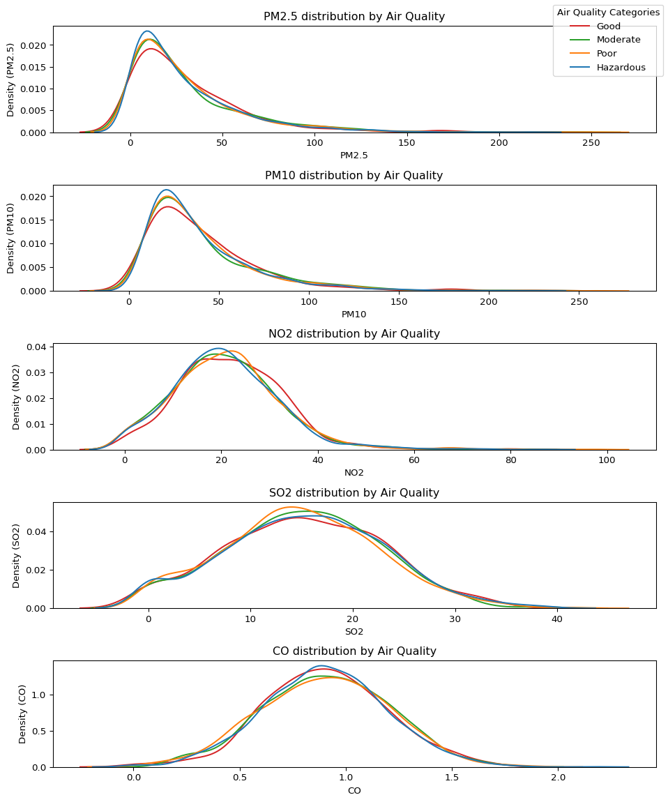
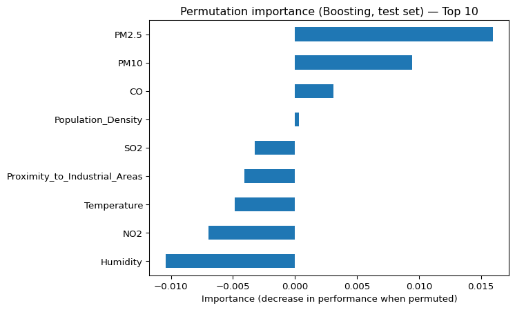

This mini-case builds a predictive model for classifying air quality levels (Good, Moderate, Poor, Hazardous) based on pollutant concentrations and environmental factors.
Best-performing model (test split): Tuned HistGradientBoostingClassifier
Benchmarks: Logistic Regression log loss 1.396 (Accuracy 0.208, Macro F1 0.201); Quadratic Logistic Regression log loss 1.407 (Accuracy 0.220, Macro F1 0.216)
Key insight: PM2.5 and PM10 concentrations are the strongest predictors, while NO2, SO2, and CO provide additional signal. Environmental factors like temperature and humidity contribute marginally.
Practical relevance: The model enables data-driven air quality monitoring and supports targeted interventions for pollution control.
2 Problem Statement
Air quality categories are used to communicate health risk and guide actions such as warnings, traffic restrictions, or industrial mitigation. The objective of this case is to predict air quality level from measured pollutant concentrations and contextual variables.
A good solution should:
Produce reliable probabilistic predictions (low log loss) and balanced performance across categories (macro F1).
Remain interpretable enough to explain which environmental factors are most associated with deteriorating air quality.
3 Data
The data set pollution.csv contains the following variables.
Variable
Description
Temperature (°C)
Average temperature of the region.
Humidity (%)
Relative humidity recorded in the region.
PM2.5 Concentration (µg/m³)
Fine particulate matter levels.
PM10 Concentration (µg/m³)
Coarse particulate matter levels.
NO2 Concentration (ppb)
Nitrogen dioxide levels.
SO2 Concentration (ppb)
Sulfur dioxide levels.
CO Concentration (ppm)
Carbon monoxide levels.
Proximity to Industrial Areas (km)
Distance to the nearest industrial zone.
Population Density (people/km²)
Number of people per square kilometer in the region.
Some pollutant measurements contain small negative values (likely measurement noise / data artefacts). Since negative concentrations are not physically meaningful, I will clip values at zero.
Figure 1: Distribution of target categories (Air Quality).
Air Quality
Good 2000
Moderate 1500
Poor 1000
Hazardous 500
Name: count, dtype: int64
Percentage distribution:
Air Quality
Good 40.0
Moderate 30.0
Poor 20.0
Hazardous 10.0
Name: count, dtype: float64
Code
order = ["Good", "Moderate", "Poor", "Hazardous"]features = ["PM2.5", "PM10", "NO2", "SO2", "CO"]fig, axes = plt.subplots(len(features), 1, figsize=(10, 12), sharex=False)for ax, col inzip(axes, features): sns.kdeplot( data=pollution, x=col, hue="Air Quality", hue_order=order, common_norm=False, ax=ax ) ax.set_title(f"{col} distribution by Air Quality") ax.legend_.remove() handles, labels = axes[0].get_legend_handles_labels()fig.legend(handles, labels, loc="upper right", title="Air Quality Categories", labels=order)for ax, col inzip(axes, features): ax.set_ylabel(f"Density ({col})")plt.tight_layout()plt.show()

Figure 2: KDE distributions of key pollutants by air quality category.
Target imbalance:
By examening Figure 1 we can see that the target variable is partially imbalanced. The category “Good air quality” accounts for 40% of the data, while “Hazardous air quality” accounts for only 10%. Although the difference is not a very high, it may still lead to the classification models to favor the majority classes. This potential bias could impact the models ability to accurately classify the minority classes, especially if they represent critical conditions.
Pairplot patterns:
For visualization, I focus the KDE plots on pollutant concentration variables (PM2.5, PM10, NO2, SO2, CO) because they are the most direct drivers of air quality categories and yield interpretable distribution comparisons across classes. All available features (including temperature, humidity, proximity to industrial areas, and population density) are still included in model training and are later evaluated using model-based feature importance.
The KDE plots in Figure 2 show substantial overlap between air quality categories for most variables. PM2.5 and PM10 are strongly right-skewed and exhibit slightly different tails across categories, suggesting they may carry more signal than the other pollutants. NO2, SO2, and CO show highly overlapping distributions, indicating limited separability when considered individually. Overall, the overlap suggests that robust performance will likely require combining multiple predictors and capturing interactions, which motivates comparing linear and non-linear classifiers and using model-based feature importance later.
The baseline model (most-frequent class) provides a minimum performance reference. Since it always predicts the same class, it can achieve a relatively high accuracy in an imbalanced dataset, but it does not learn any relationship between the features and the target. In this case, the baseline reaches an accuracy of 0.40 and a macro F1 of 0.143. However, its log loss is 21.63, which is extremely poor. This is expected because the baseline assigns almost all probability mass to a single class, meaning the model is effectively “certain” even when the true label belongs to a different category—log loss penalizes such overconfident misclassification heavily in multiclass settings.
The log loss measures how well a model predicts class probabilities. It penalizes confident wrong predictions more strongly, so lower log loss is better. The Logistic Regression model achieves a log loss of 1.396, which is a major improvement over the baseline (21.63). This indicates that the model produces more meaningful probability estimates and captures real signal from the predictors, even if classification accuracy remains low.
The accuracy score measures the proportion of correctly predicted labels. Logistic Regression achieves an accuracy of 0.208, which is lower than the baseline accuracy (0.40). This suggests that the linear decision boundaries of Logistic Regression may not be sufficient to outperform a majority-class strategy on raw label correctness, especially given overlap between class distributions observed in the EDA.
To account for class imbalance, I also report macro F1, which weighs all classes equally. Logistic Regression achieves a macro F1 of 0.201, improving over the baseline (0.143). This indicates better balanced performance across categories, even though the model still struggles overall.
In summary, Logistic Regression produces substantially better probability calibration (log loss) and better class-balanced performance (macro F1), but it does not improve raw accuracy relative to a majority-class baseline. In the next step, I test more flexible non-linear models to better capture interactions and improve separation between air quality categories.
Adding polynomial (degree-2) features slightly improves class-balanced performance (macro F1 increases from 0.201 to 0.216 and accuracy increases from 0.208 to 0.22). However, log loss becomes slightly worse (1.396 to 1.407), indicating that probability calibration does not improve. To check whether these differences are robust, I evaluate both models using stratified cross-validation on the training set.
perm = permutation_importance( boost, X_test, y_test, n_repeats=10, random_state=42, scoring="neg_log_loss")imp = pd.Series(perm.importances_mean, index=X.columns).sort_values(ascending=False).head(10)plt.figure()imp.sort_values().plot(kind="barh")plt.title("Permutation importance (Boosting, test set) — Top 10")plt.xlabel("Importance (decrease in performance when permuted)")plt.ylabel("")plt.show()imp

(a) Permutation importance of features for the boosting model (test set).
PM2.5 0.015945
PM10 0.009462
CO 0.003099
Population_Density 0.000348
SO2 -0.003213
Proximity_to_Industrial_Areas -0.004093
Temperature -0.004874
NO2 -0.006953
Humidity -0.010414
dtype: float64
(b)
Figure 3
Boosted score: The boosting classifier performs better than the logistic regression models on the test set, achieving higher accuracy (0.354) and higher macro F1 (0.253). However, the log loss (1.440) is not improved compared to logistic regression, suggesting that while boosting predicts labels more effectively, its probability estimates are not clearly better calibrated. Importance plot: In the permutation importance plot Figure 3, PM2.5 and PM10 stand out as the most influential predictors. Several other features have near-zero importance, and some show slightly negative values. Negative permutation importance can occur due to sampling noise and indicates that permuting the feature does not consistently harm performance. Overall, the plot suggests that the model relies primarily on particulate matter measures, while variables such as Population_Density contribute little in this setting. Conclusion: Overall, boosting provides stronger class-balanced classification performance (macro F1) and improved accuracy relative to logistic regression, which indicates that non-linear modelling adds value for label prediction. At the same time, the probability quality (log loss) does not improve, so logistic regression may remain preferable if well-calibrated probabilities are the main goal. A reasonable next step is to tune boosting hyperparameters and consider simplifying the feature set by removing consistently low-importance variables to reduce noise and improve stability.
Final Comparison Across the evaluated models (Table Table 1), HistGradientBoosting achieves the best overall performance on the test set with log loss = 1.322 and accuracy = 0.391, indicating improved probability estimates and higher label correctness compared to the linear baselines. Logistic Regression performs notably worse (log loss = 1.396, accuracy = 0.208), suggesting that linear decision boundaries are not sufficient to separate the four air quality categories in this dataset.
The polynomial logistic regression provides a small improvement in accuracy (0.22 vs 0.208) but does not improve log loss, indicating that while it captures some non-linear interactions, it does not produce better-calibrated probabilities.
The baseline model (most frequent class) achieves a relatively high accuracy (0.40) due to class imbalance but has very poor log loss (21.63), confirming that it does not learn any meaningful relationships between features and the target.
Conclusion Overall, the tuned boosting model provides the best balance of improved probability estimates (log loss) and better label prediction (accuracy, macro F1), making it the most effective choice for this classification task. The importance analysis also highlights which features are driving predictions, providing insights into the factors influencing air quality categories.
In a real deployment, I would further validate the boosting model with cross-validation and consider probability calibration (e.g., isotonic regression) if calibrated risk scores are required.